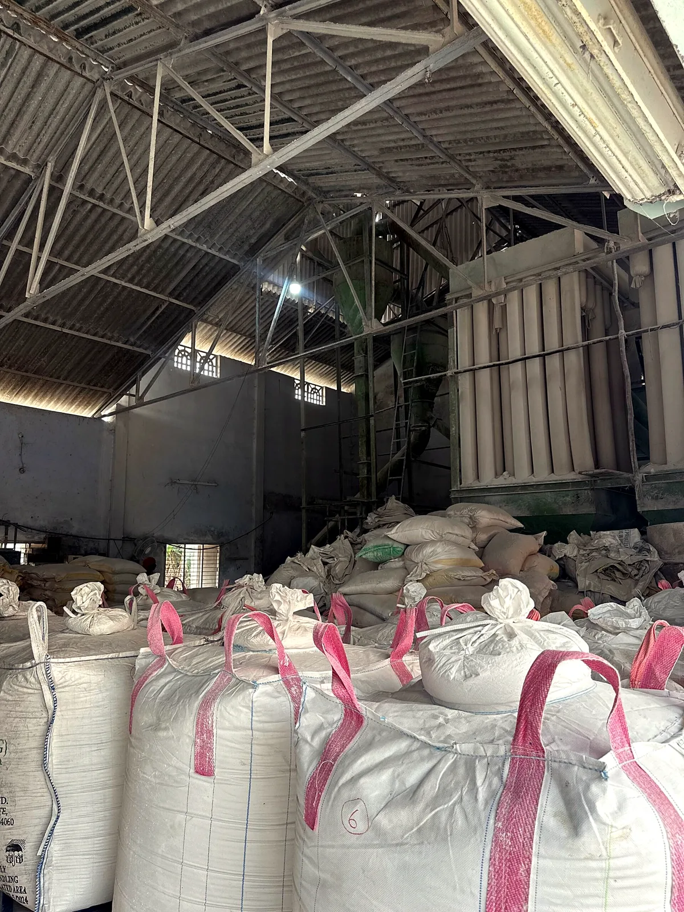
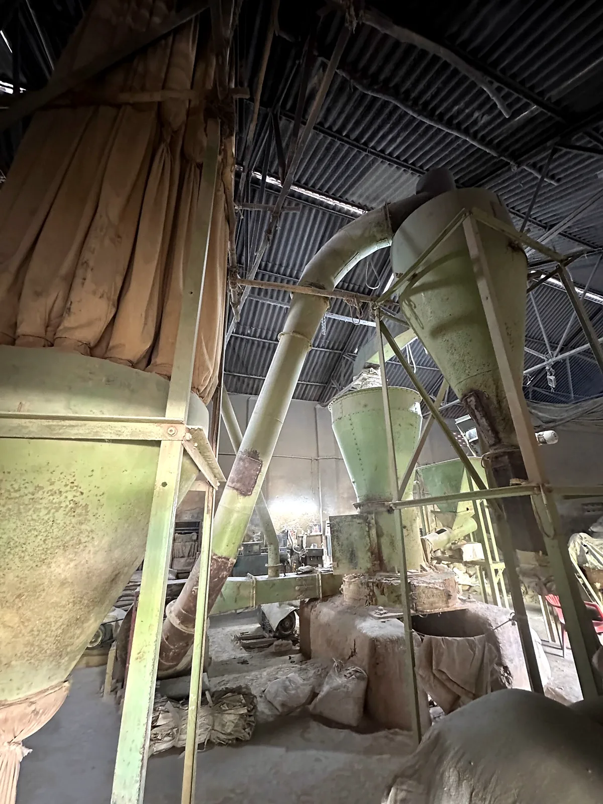
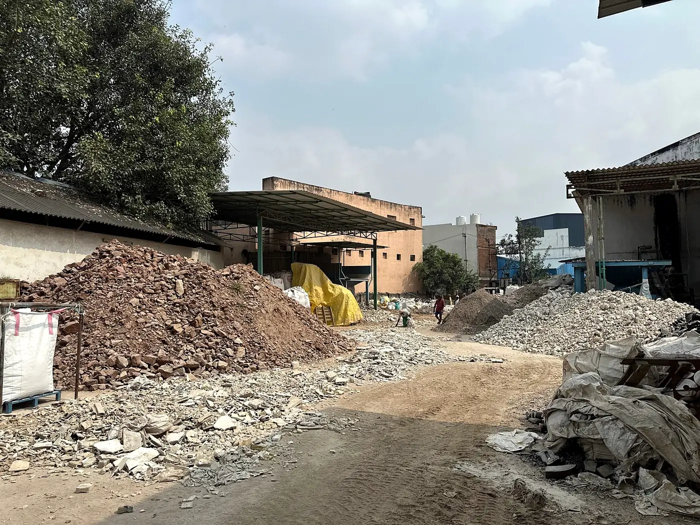

Ball mills, roller mills, mesh plants and a rotary kiln: the machinery, yards and stores behind every consistent batch we ship.
09Photographs from our sites
Walk-through
01 / 07
From yard to bag.
A walk through our Chennai and Salem units, from raw mineral stockpiles to grinding mills and finished goods ready for dispatch.







Across the group
The machinery behind the minerals.
Installed across our five companies in Chennai, Gummidipoondi and Salem.
- 01Rotary kilnGummidipoondi · 1450°C
- 07Ball millsChennai & Salem
- 02Three-roller millsSri Devi Minerals
- 03Mesh plantsSri Venkateswara Minerals
Gallery
Every photograph.
Select any image to view it full screen. Use the arrow keys to move between photographs.

Visit or order
See the quality for yourself.
Talk to us about grades, samples and supply from any of our five units.